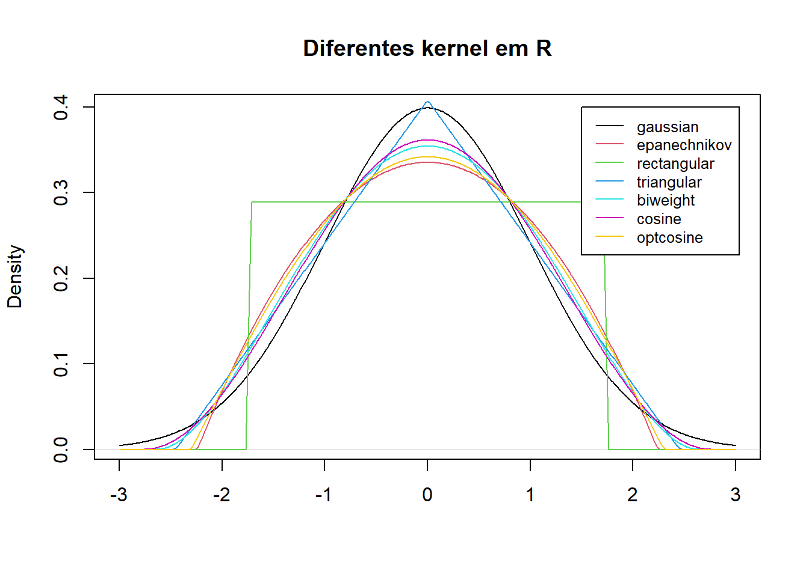

Code
set.seed(1340)
x = rnorm(50)
par(mar=c(4,2,1,1))
hist(x, main = NULL, freq = FALSE, breaks = "Sturges")
box()Code
par(mar=c(4,2,1,1))
hist(x, main = NULL, freq = FALSE, breaks = "Scott")
box()
Última atualização: 03 de agosto de 2018.
Sejam \(x_{1}, x_{2}, \cdots x_{n}\), variáveis aleatórias independentes identicamente distribuídas com distribuição comum \(L(X)\) e seja \(P\) a classe de todas as possíveis distribuições de \(X\) que consiste de todas as distribuições absolutamente contínuas ou discretas.
Definição. A estatística \(T(X)\) é suficiente para a família de distribuições \(P\) se a distribuição condicional de \(X|T=t\) é a mesma, seja qual for a função de distribuição \(F∈P\).
Exemplo. Sejam \(x_{1}, x_{2}, \cdots x_{n}\) variáveis aleatórias independentes igualmente distribuídas com distribuição absolutamente contínua e seja \(T = (X_{(1)}, \cdots, X_{(n)})\) a estatística de ordem. Então: \[f(x|T = t) = 1n!,\] e vemos que \(T\) é uma estatística suficiente para a família das distribuições absolutamente contínuas.
Definição. A família de distribuições P é completa se somente a função zero for o estimador não viesado de 0, isto é, EF(h(X))=0, para todo F∈P implica que h(X)=0 . Isto para todo x exceto para um conjunto nulo em relação a cada F∈P .
Exemplo. Seja X∼Uniforme(0,θ) , onde θ∈(0,∞) . Mostraremos que esta família de distribuições é completa. Precisamos mostrar que Eθ(g(X))=∫θ0g(x)1θdx=0,∀θ>0, se, e somente se, g(x)=0 , para todo x . Em geral, esse resultado segue a teoria da integração. Se g for contíua, diferenciamos ambos os lados de ∫θ0g(x)dx=0, para obter g(θ)=0 , para todo θ>0 . Agora, seja X1,X2,⋯,Xn uma amostra aleatória da distribuição Uniforme(0,θ) . Também, seja X(n)=max(X1,X2,⋯,Xn) . Então, a função de densidade de X(n) é dada por fX(n)(x|θ)=nθ−nxn−1,0<x<θ, zero caso contrário. Vemos por um argumento semelhante que X(n) é completa, o que é o mesmo do que dizer que {fX(n)(x|θ);θ>0} é uma família de densidades completa. Claramente X(n) é suficiente.
Definição. Uma estatística T(X) é dita ser completa em relação a uma classe de distribuições P se a classe de distribuições induzidas de T for completa.
Claro que todos os exemplos já encontrados de estatísticas completas ou famílias completas de distribuições para o caso paramétrico podem ser aplicados nesta situação.
Teorema. A estatística de ordem (X(1),⋯,X(n)) é uma estatística suficiente e completa desde que a amostra X1,X2,⋯,Xn seja composta de variáveis aleatórias independentes identicamente distribuídas do tipo discreta ou contínua. Demonstração Ver Fraser (1965).▉
Definição. Diz-se que uma função real g(F) é estimável se tiver um estimador não viciado, isto é, se existe uma estatística T(X) tal que EF(T(X))=g(F), para todo F∈P .
Exemplo. Se P é a classe de todas as distribuições para as quais o segundo momento existe, X é um estimador não viciado de μ(F) , a média da população. Similarmente μ2(F)=VarF(X), é também estimável e um estimador não viciado é S2=1n−1∑i=1n(Xi−X¯¯¯¯)2⋅ Da mesma forma, X¯¯¯¯−Y¯¯¯¯ é um estimador não viciado de E(X)−E(Y) , 1n{número de X>c} é um estimador não viciado de PF(X>c) e assim por diante.
Definição. O grau m , m≥1 , de um parâmetro estimável g(F) é o menor tamanho de amostra para o qual o parâmetro é estimável, ou seja, é o menor n para o qual existe um estimador não viciado T(X1,⋯,Xn) com EF(T(X))=g(F), para todo F∈P .
Exemplo. O parâmetro g(F)=PF(X>c), onde c é uma constante conhecida, têm grau 1. Também μ(F) é estimável com grau 1, para isto assumimos que existe ao menos um F∈P tal que μ(F)≠0 . Acontece que μ2(F) é estimável com grau 2, desde que μ2(F) não seja estimável de forma não viciada por somente uma observação. Ao menos duas observações são necessárias. De maneira similar, μ2(F) têm grau 2.
Definição. Um estimador não viciado de algum parâmetro baseado no tamanho mínimo de amostra, ou seja, com amostra iagual ao grau m é chamado de kernel.
Exemplo. Seja X1,⋯,Xn uma amostra aleatória com distribuição F . Então Xi é o kernel de μ(F) ; XiXj , i≠j , é o kernel de μ2(F) e cada T(Xi,Xj)=X2i−XiXj,i=1,⋯,n,i≠j, é kernel de μ2(F) .
Teorema. Existe um kernel simétrico para cada parâmetro estimável. Demonstração Seja T(X1,⋯,Xm) um kernel para g(F) . Também é Ts(X1,⋯,Xm)=1m!∑PT(Xi1,Xi2⋯,Xim) um kernel para g(F) , onde a soma P acontece sobre todas as m! permutacoes de {1,2,⋯,m} .▉
Exemplo. Seja X1,⋯,Xn uma amostra aleatória com distribuição F . Um kernel simétrico para μ2(F) é Ts(Xi,Xj)=12(T(Xi,Xj)+T(Xj,Xi))=12(Xi−Xj)2,i=1,⋯,n,i≠j⋅
Definição. Seja g(F) um parâmetro estimável de grau m e X1,X2,⋯,Xn uma amostra aleatória de F de tamanho n , n≥m . Correspondendo a qualquer kernel T(X1,⋯,Xn) de g(F) , definimos a U-estatística para a amostra como U(X1,X2,⋯,Xn)=1(nm)∑CTs(Xi1,Xi2,⋯,Xin), onde o índice da soma C percorre todas as (nm) permutações de m inteiros (i1,i2,⋯,im) escolhidos de {1,2,⋯,n} e Ts é um kernel simétrico, como definido na demonstração do Teorema anterior.
Claramente, a U-estatística definida é simétrica nos X e EF(U(X))=g(F), para todo F .
Exemplo. Seja X1,⋯,Xn uma amostra aleatória com distribuição F . Para estimarmos μ(F) a U-estatística é dada por U(X1,X2,⋯,Xn)=1n∑i=1nXi⋅ Para estimarmos μ2(F) , um kernel simétrico é Ts(Xi1,Xi2)=12(Xi1−Xi2)2, para i1=1,2,⋯,n , i1≠i2 . A correspondente U-estatística é U(X)=1(n2)∑i1<i212(Xi1−Xi2)2=1n−1∑i=1n(Xi−X¯¯¯¯)2=S2⋅
De maneira similar, para estimarmos μ2(F) , o kernel simétrico é Ts(Xi1,Xi2)=Xi1Xi2 e a correspondente U-estatística é U(X)=1(n2)∑i<jXiXj=1n(n−1)∑i≠jXiXj⋅ Para estimarmos μ3(F) um kernel simétrico seria Ts(Xi1,Xi2,Xi3)=Xi1Xi2Xi3 , sendo que a U-estatística é U(X)=1(n3)∑i<j<kXiXjXk=1n(n−1)(n−2)∑i≠j≠kXiXjXk⋅ O seguinte resultado mostra a importância da U-estatística.
Teorema. Seja P a classe de todas as distribuições absolutamente contínuas ou discretas. Qualquer função estimável g(F) , F∈P , tem um estimador único que é não viciado, simétrico nas observações e uniformemente de variância mínima entre todos os estimadores não viciados. Demonstração Seja X1,⋯,Xn uma amostra aleatória de F , F∈P e seja T(X1,⋯,Xn) um estimador não viciado de g(F) . Considere o conjunto de todas as n! permutações de {1,2,⋯,n} e indexá-los adequadamente. Seja {i1,i2,⋯,in} o i-ésimo deste conjunto e seja Ti=Ti(X1,X2,⋯,Xn)=T(Xi1,Xi2⋯,Xin),i=1,2,⋯,n!⋅ Seja T¯¯¯¯=1n!∑i=1n!Ti⋅ Claro que E(T)=g(F) e Var(T¯¯¯¯)=≤E(1n!∑n!i=1Ti)2−(g(F))2E(1(n!)2∑n!i=1T2i)−(g(F))2=E(T2)−(g(F))2=Var(T)⋅ A igualdade se mantém se, e somente se, Ti(X1,X2,⋯,Xn)=αn!,i=1,2,⋯,n!, para todos os pontos no espaço amostral, exceto talvez para um conjunto nulo, em que α é uma constante. Segue-se que T(X) é simétrico nos argumentos X1,X2,⋯,Xn com probabilidade 1 e T¯¯¯¯ é idêntico a T . A exclusividade é deixada como exercício.▉
Teorema. Seja T(X1,⋯,Xn) um estimador não viciado para g(F) , F∈P . A correspondente U-estatística é essencialmente o único estimador não viciado uniformemente de mínima variância. Demonstração Consequência do teorema anterior.▉
De acordo com os teoremas acima precisamos apenas considerar estimadores que sejam simétricos nas observações e tudo o que devemos fazer é torná-las não viciados. Este procedimento leva a um estimador não viciado com a menor variância na classe de todos os estimadores não viciados do parâmetro. Por exemplo, como consequência destes teoremas, X¯¯¯¯ e S2 são os únicos estimadores não viciados uniformemente de variância mínima de μ(F) e μ2(F) , respectivamente.
Exemplo. Seja P a classe de todas as distribuições absolutamente contínuas e X1,X2,⋯,Xn uma amostra aleatória de tamanho n . Para estimarmos g(F)=PF(X1>c), onde c é uma constante fixa, definimos Yi={1,0,Xi>c,Xi≤ci=1,2,⋯,n⋅ Considere agora T(Y1,Y2,⋯,Yn)=∑i=1nαiYi, como um estimador de g(F) . Para encontrar o estimador não viciado de mínima variância de g simetrizamos T nos Y1,Y2,⋯,Yn . Isso acontece se αi=α , i=1,2,⋯,n e T(Y)=α∑ni=1Yi . Para T ser não viciado, temos que EF(T)=α∑i=1nEF(Yi)=αng(F), de maneira que α=1n . Portanto, 1n∑ni=1Yi é o estimador não viciado de mínima variância; também VarF(T)=g(F)(1−g(F))n≤14n⋅ Além disso, Yi têm distribuição Bernoulli , de modo a 1n(T−g(F))(g(F)(1−g(F)))12⟶DZ,n→∞, onde Z∼N(0,1) . Este resultado pode ser usado para encontrar limites de confiança em g(F) .
Seja P a classe de todas as distribuições absolutamente contínuas na reta real. Sejam F,G∈P e definamos a função distância Δ(F,G) como segue: Δ(F,G)=∫∞−∞(F(x)−G(x))2F′(x)+G′(x)2dx⋅ Esta função satisfaz as seguintes propriedades:
Δ(F,G)=0 se, e somente se, F=G . Δ(F,G)=Δ(G,F) . Δ(F,G)>0 . Por outro lado, vamos supor que F(x)≠G(x) para algum x1 , onde F(x1)−G(x1)=d>0 . Dado que F e G são distribuições absolutamente contínuas, existe um x0<x1 , tal que F(x0)−G(x0)=d2eF(x)−G(x)≥d2, para x0≤x≤x1 . Dado que tanto F quanto G são ambas não decrescentes, pelo menos um dos F e G deve aumentar pelo menos d/2 quando x varia de x0 a x1 . Então Δ(F,G)≥∫x1x0(F(x)−G(x))2F′(x)+G′(x)2dx≥(d2)2d/22>0⋅ Exemplo. Encontremos um estimador não viciado de mínima variância para Δ(F,G) . Sejam X1,X2,⋯,Xm uma amostra aleatória de F e Y1,Y2,⋯,Yn uma amostra aleatória de G , independentes. Consideramos que F,G∈P . Primeiro mostramos que g(F,G)=P({max(X1,X2)<min(Y1,Y2)}⋃{max(Y1,Y2)<min(X1,X2)})=13+2Δ(F,G)⋅ Temos que g(F,G)=P({max(X1,X2)<min(Y1,Y2)})+P({max(Y1,Y2)<min(X1,X2)}) e P(max(X1,X2)≤x)=F2(x),P(min(Y1,Y2)≥y)=[1−G(y)]2⋅ Então g(F,G)======∫∞−∞[1−G(y)]22F(y)F′(y)dy+∫∞−∞[1−F(x)]22G(x)G′(x)dx∫∞−∞[1+G2(y)−2G(y)]2F(y)F′(y)dy+∫∞−∞[1+F2(x)−2F(x)]2G(x)G′(x)dx2+∫∞−∞2[G2(x)F(x)F′(x)+F2(x)G(x)G′(x)−2F(x)G(x)(F′(x)+G′(x))]dx3−2∫∞−∞((F(x)+G(x))2−(F(x)−G(x))2)(F′(x)+G′(x)2)dx3−8∫∞−∞(F(x)+G(x)2)2(F′(x)+G′(x)2)dx+2Δ(F,G)3−83+2Δ(F,G)=g(F,G)⋅ Para utilizarmos os teoremas acima, vamos definir φ(X1,X2,Y1,Y2)={1,0,se max(X1,X2)<min(Y1,Y2) ou se max(Y1,Y2)<min(X1,X2)caso contrário Então φ(X1,X2,Y1,Y2) é um estimador não viciado de g(F,G) e de fato é um kernel de g(F,G) . A U-estatística correspondente, portanto, deve ser o estimador não viciado de mínima variância. Nós temos U(X,Y)=1(m2)(n2)∑i1<i2∑k1<k2φ(Xi1,Xi2,Yk1,Yk2), de maneira que U é o estimador não viciado de mínima variância de g(F,G) , assim como o estimador não viciado de mínima variância de Δ(F,G) é Δˆ(F,G)=12U(X,Y)−16⋅
Exemplo. Seja P a classe de todas as funções de distribuição absolutamente contínuas na reta real e X1,X2,⋯,Xm e Y1,Y2,⋯,Yn duas amostras aleatórias independentes de F e G , respectivamente, com F,G∈P . Queremos estimar ρ(F,G)=P(X<Y)⋅ Com esse objetivo, vamos definir Zij={1,0,Xi<YjXi≥Yj para cada par Xi,Yj , i=1,2,⋯,m e j=1,2,⋯,n . Então ∑i=1mZij é o número de vezes que X<Yj e ∑j=1nZij é o número de vezes que Xi<Y . Mann and Whitney (1947) sugeriram utilizar o estimador U/mn , onde U=∑i=1m∑j=1nZij e E(U)=mnE(Zij)=mnP(X<Y)⋅ Então ρˆ(F,G)=Umn, é não viciado para ρ . Além disso, ρˆ é simétrico em X e Y , de modo que tem uma variância mínima. Para calcular a variância mínima, temos E(U2)=∑i∑j∑h∑kE(ZijZhk), onde ZijZhk={1,0,se Xi<Yj e Xh<Ykcaso contrário, de modo a E(ZijZhk)=P(Xi<Yj,Xh<Yk)=⎧⎩⎨⎪⎪⎪⎪⎪⎪⎪⎪⎪⎪⎪⎪⎪⎪⎪⎪⎪⎪⎪⎪⎪⎪⎪⎪∫F(x)G′(x)dx,∫(1−G(x))2F′(x)dx,∫F2(x)G′(x)dx,(∫F(x)G′(x)dx)2, caso i=h,j=k caso i=h,j≠k caso i≠h,j=k caso i≠h,j≠k⋅ Há mn termos com i=h,j=k ; m(m−1)n termos com i≠h,j=k ; mn(n−1) termos com i=h,j≠k e m(m−1)n(n−1) termos com i≠h,j≠k . Segue que E(U2)=mn∫F(x)G′(x)dx+mn(n−1)∫(1−G(x))2F′(x)dx+m(m−1)n∫F2(x)G′(x)dx+m(m−1)n(n−1)(∫F(x)G′(x)dx)2, que leva à variância de U . Em particular, se F=G , então Var(U)=mn(m+n+1)12⋅
I.1 Estimação de densidades
De certa forma, problemas de estimação não-paramétrica são extensões de problemas de estimação paramétrica, mas a natureza do primeiro é bem diferente do último. Considere, por exemplo, a situação de observações independentes identicamente distribuídas, digamos X1,X2,⋯,Xn . Em um problema paramétrico, assumimos que a distribuição de Xi é F(⋅;θ) , a qual é totalmente especificada até o vetor de parâmetros θ ; então o problema é essencialmente a estimaçã de θ . Em um problema não-paramétrico, a distribuição é totalmente desconhecida com, talvez, algumas restriçõs em propriedades gerais e, portanto, é denotada por F .
Aqui consideramos estimadores de F em termos de função de densidade f . A função de densidade tem a vantagem de fornecer uma representação visualmente mais informativa da distribuição subjacente. Por exemplo, o histograma geralmente dá uma ideia aproximada da forma da distribuição. Este último ficou como o único estimador de densidade não paramétrico até 1950. Por essa razão, nossa discussão começará com os histogramas.
Embora o histograma seja usado extensivamente, não é tão frequente que seja necessária uma definição matemática. Uma maneira de defini-lo é através da função de densidade empírica.
Definição. Seja f a derivada de F ; por isso pode-se expressar como f(x)=limh→0F(x+h)−F(x−h)2h⋅ Então, dizemos que fˆ , definido por fˆ(x)=Fˆ(x+h)−Fˆ(x−h)2h, é o histograma, sendo que Fˆ é a função de distribuição empírica.
O parâmetro h é chamado de largura de banda. Podemos escrever fˆ , definido acima como, fˆ(x)=12nh∑i=1n11(x−h;x+h)(Xi)⋅ Podemos excrever a função de densidade como f(x)=limh→01h(F(x+h)−F(x−h)) , mas não se pode definir daqui o histograma porque, então, esse limite é zero ou infinito e assim em algum momento é preciso parar, em outras palavras, não se pode chegar muito perto de zero.
Teorema. Seja f a função de densidade da função de distribuição F . Então, com probabilidade 1, fˆ(x)∼Binomial(n,p), com p=F(x+h)−F(x−h) . Assim, o comportamento assintótico do histograma pode ser derivado da distribuição binomial como E(fˆ(x))=F(x+h)−F(x−h)2h e Var(fˆ(x))=p(1−p)4nh2⋅ Demonstração. Exercício.▉
Deste teorema segue que fˆ(x) é um estimador consistente pontual de f(x) quando h→0 e nh→∞ . A seguir, o processo de limite é entendido como h=hn , de maneira que hn→0 e nhn→∞ . Estas condições podem ser interpretadas como se fosse necessário hn ir a zero, mas não muito rápido. Isso é exatamente o que temos especulado, exceto que agora temos a taxa exata de convergência, que pode ser escrita como hn=o(n) .
Exemplo. Utilaremos dados simulados da distribuíão N(0,1) , com isso mostramos o histograma destes 50 dados utilizando duas formas diferentes de encontrarmos uma expressão para hn , a chamada largura de banda.
set.seed(1340)
x = rnorm(50)
par(mar=c(4,2,1,1))
hist(x, main = NULL, freq = FALSE, breaks = "Sturges")
box()par(mar=c(4,2,1,1))
hist(x, main = NULL, freq = FALSE, breaks = "Scott")
box()
Neste exemplo utilizamos duas formas de escolher a largura de banda hn dentre três diferentes possibilidades programadas na função hist. Por padrão escolhe-se breaks = “Sturges”, porposto por Sturges (1929), o qual sugere que hn=max(X1,⋯,Xn)−min(X1,⋯,Xn)1+3.322ln(n)⋅ A segunda situação indica que o qual significa que se os dados provêm da distribuição Normal temos que hn=3.49sn−1/3 sendo s o desvio padrão estimado. Esta proposta deve-se à Scott (1979).
Embora o histograma é um estimador consistente quando hn→0 e nhn→∞ , verifica-se que se pode fazer melhor. A melhoria também é motivada por uma preocupação prática: o histograma não é uma função suave, uma propriedade que se pode esperar que qualquer função de densidade real tenha.
Definição. O estimador kernel da função de densidade é dado por fˆ(x)=1nhn∑i=1nK(x−Xihn), onde K(⋅) é uma função conhecida como kernel.
É tipicamente assumido que K seja não-negativa, simétrica em torno de zero e satisfaz ∫K(u)du=1 . Claro que o histograma é um caso especial do estimador do kernel se K for escolhido como a função de densidade da distribuição Uniforme(−1,1) . O último não é uma função suave e é por isso que o histograma não é suave; mas escolhendo K como uma função suave, tem-se um estimador de f que seja suave.
Por exemplo, escolhendo a função de densidade N(0,1) , temos por resultado o conhecido como kernel Gaussiano e assim também utilizando a densidade de densidade Beta simétrica, dada por K(u)=Γ(ν+3/2)Γ(1/2)Γ(ν+1)(1−u2)ν,−1<u<1, e K(u)=0 caso contrário. Os casos especiais ν=0,1,2,3 correspondem às funções kernel uniforme, Epanechnikov, biweight e triweight, respectivamente.
kernels = eval(formals(density.default)$kernel)
plot (density(0, bw = 1), xlab = "", main = "Diferentes kernel em R")
for(i in 2:length(kernels)) lines(density(0, bw = 1, kernel = kernels[i]), col = i)
legend(1.5,.4, legend = kernels, col = seq(kernels), lty = 1, cex = .8, y.intersp = 1)
h.f = sapply(kernels, function(k) density(kernel = k, give.Rkern = TRUE))
h.f = (h.f["gaussian"] / h.f)^ .2
h.f gaussian epanechnikov rectangular triangular biweight cosine
1.0000000 1.0100567 0.9953989 1.0071923 1.0088217 1.0079575
optcosine
1.0099458 bw = bw.SJ(x) ## escolha automática
plot(density(x, bw = bw), main = "Larguras de banda equivalentes")
for(i in 2:length(kernels)) lines(density(x, bw = bw, adjust = h.f[i],
kernel = kernels[i]), col = i)
legend(55, 0.035, legend = kernels, col = seq(kernels), lty = 1)
Um problema prático importante na estimação de densidades via kernel é como escolher a largura de banda hn . Note que dadas condições como hn→0 e nhn→∞ , ainda existem muitas opções para hn . Então, de certo modo, a ordem de convergência ou divergência não resolve o problema. Uma solução para esse problema é conhecida como compensação de viés-variância. Antes de entrarmos nos detalhes, vamos primeiro apressentar um resultado em relação ao viés assintótico do estimador kernel. Aqui, o viés é definido como viés(fˆ(x))=E(fˆ(x))−f(x), para um dado x .
Teorema. Suponhamos que f seja contínua e limitada. Então o viés do estimador kernel de densidade converge a zero quando hn→0 , para todo x . Demonstração. Observemos que E(fˆ(x))==1n∑ni=11hn∫K(x−yhn)f(y)dy∫K(u)f(x−hnu)du=f(x)+∫K(u)(f(x−hnu)−f(x))du⋅ Utilizando então o teorema da convergência dominada completa-se a demonstração.▉
Teorema. Suponhamos que f seja contínua três vezes diferenciável, com terceira derivada limitada na vizinhança de x e K satisfazendo ∫K2(u)du<∞e∫|u|3K(u)du<∞⋅ Se hn→0 quando n→∞ , temos que viés(fˆ(x))=h2n2f′′(x)∫u2K(u)du+o(h2n)⋅ Se, além disso nhn→∞ quando n→∞ , então temos Var(fˆ(x))=f(x)nhn∫K2(u)du+o((nhn)−1)⋅ Demonstração. A demonstração é baseada na expansão de Taylor, f(x−hnu)=f(x)−hnuf′(x)+h2nu22f′′(x)−h3nu36f′′′(ϵ), sendo ϵ fica entre x−hnu e x . Os detalhes são deixados como um exercício.▉
Uma medida de precisão do estimador é o erro quadrático médio (EQM), dado por EQM(fˆ(x))=E(fˆ(x)−f(x))2⋅ É fácil mostrar que o EQM combina o viés e a variância de tal maneira que EQM(fˆ(x))=viés(fˆ(x))2+Var(fˆ(x))⋅ Vemos que, sob as condiçotilde;es hn→0 e nhn→∞ e se ignorarmos os termos de baixa ordem, temos EQM(fˆ(x))≈h4n4(f′′(x))2τ4+f(x)nhnγ2, onde τ2=∫u2K(u)du e γ2=∫K2(u)du . O termo à direita da expressão acima é minimizada quando hn=(γ2f(x)τ4(f′′(x))2)15n−15⋅ Note ainda que a expressão acima não é a solução ideal, isso porque f é desconhecida na prática. No entanto, dá-nos pelo menos alguma ideia sobre a taxa ideal de convergência a zero, sendo esta hn=O(n−15) .
Quando f é desconhecida, uma abordagem natural seria substituí-lo por um estimador e, assim, obter uma largura de banda ideal estimada. Uma complicação é que a largura de banda ideal depende de x mas, idealmente, gostaríamos de usar uma largura de banda que funcionasse para diferentes x dentro de um certo intervalo, se não todos os x . Para obter uma largura de banda ideal que não depende de x , integramos os dois lados da expressão de EQM em relação a x . Isto nos leva a ∫EQM(fˆ(x))dx≈τ4h4n4∫(f′′(x))2dx+γ2nhn∫f(x)dx=τ4θ2h4n4+γ2nhn, com θ2=∫(f′′(x))2dx . Pelo mesmo argumento, o lado direito acima é minimizado quando hn=(γ2τ4θ2)15n−15⋅ Desta vez, o hn ideal não depende de x . Além disso, a integral do EQM ou o IEQM mínimo é dado por IEQM=∫EQM(fˆ(x))dx=54(τγ2)45θ25n−45⋅ Uma implicação é a seguinte. Note que o IEQM depende do kernel K através de cK=(τγ2)45 . Mostrou-se que para os kernels comumente usados, tais como aqueles listados, o desempenho dos estimadores de kernel correspondentes é quase o mesmo em termos dos valores de cK . Voltando ao problema sobre a estimação da largura de banda ideal, vemos que tudo o que precisamos é encontrar um estimador consistente de θ2 . Se f é a função de densidade da distribuição normal com desvio padrão σ , então pode ser mostrado que θ2=3/8π−−√σ5 . Naturalmente, se alguém souber que f é normal, então a estimação da densidade não-paramétrica não seria necessária, porque um método paramétrico provavelmente seria melhor. Em geral, pode-se expandir f em torno da densidade gaussiana usando a expansão de Edgeworth.
Utilizando a abordagem acima, Hjort and Jones (1996) obteveram o seguinte estimador ótimo para a largura de banda hˆn=hˆ0(1+3548γˆ4+3532γˆ23+3851024γˆ24)−15, onde hˆ0 é a estimativa ideal da largura de banda assumindo que f é normal, isto é, com θ2 substituído por 3/8π−−√σ5 ou mais explicitamente hˆ0=1.06(σˆn15), chamamos hˆ0 a largura de banda da linha de base e σˆ2 é a variância amostral dada por σˆ2=1n−1∑i=1n(Xi−X¯¯¯¯)2⋅ Além disso, γˆ3 e γˆ4 são os estimadores dos coefcientes de assimetria de amostra e curtose, dado por γˆ3=1(n−1)σˆ3∑i=1n(Xi−X¯¯¯¯)3 e γˆ4=1(n−1)σˆ4∑i=1n(Xi−X¯¯¯¯)4−3, respectivamente. Houve outras abordagens para a seleção da largura de banda ótima, incluindo o método de validação cruzada. Ambos procedimentos foram programados na função density.
Exemplo. Utilaremos os dados simulados da distribuíão N(0,1) no exemplo anterior para com isso mostrarmos o histograma e o estimador Kernel da função de densidade.
set.seed(1340) x = rnorm(50) par(mar=c(4,2,1,1)) hist(x, main = NULL, freq = FALSE, breaks = “Sturges”) box() lines(density(x, bw = “nrd0”), col = “red”) par(mar=c(4,2,1,1)) hist(x, main = NULL, freq = FALSE, breaks = “Scott”) box() lines(density(x, bw = “bcv”), col = “red”)
I.2 Exercícios Seja T(X1,⋯,Xn) uma estatística simétrica nas observaçóes. Mostre que T pode ser escrita como função das estatísticas de ordem. Por outro lado, se T(X1,⋯,Xn) pode ser escrita como função das estatísticas de ordem, T é simétrica nas observações.
Sejam X1,X2,⋯,Xm e Y1,Y2,⋯,Yn amostras independentes de duas distribuições absolutamente contínuas. Encontre o estimador não viciado de mínima variância de: (a) E(XY)
Seja (X1,Y1),(X2,Y2),⋯,(Xn,Yn) uma amostra aleatória com distribuição absolutamente contínua bivariada. Encontre o estimador não viciado de mínima variância de: (a) E(XY)
Cosidere (R,B,Pθ) um espaço de probabilidade e P={Pθ:θ∈Θ} . Seja A um elemento da σ -álgebra de Borel e considere d(θ)=Pθ(A) . (a) A função d é estimável? Se sim, qual é o grau? (b) Encontre o estimador não viciado de mínima variância de d , baseado em uma amostra de tamanho n e assumindo que P seja a classe de todas as distribuições contínuas.